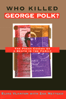

An intriguing new answer to a puzzling international conspiracy
An intriguing new answer to a puzzling international conspiracy


 An intriguing new answer to a puzzling international conspiracy
An intriguing new answer to a puzzling international conspiracy

|  |
Who Killed George Polk?The Press Covers Up a Death in the FamilyElias Vlanton with Zak Mettgercloth EAN: 978-1-56639-367-6 (ISBN: 1-56639-367-1) |
Philadelphia Book Clinic Certificate of Award, 1997
"Vlanton has maintained an unflagging interest in the mystery and the ugly circumstances surrounding a major event in journalistic history. Now, nearly half a century later, his investigative reporting has produced what should likely be the definitive work on the subject."
—Robert D. Spector, Chairman, The George Polk Awards
Just weeks after CBS correspondent George Polk was murdered in Greece in 1948, his peers created the "George Polk Award" to honor the best in American journalism. Polk would have been bitterly disappointed, however, had he known that the "best in American journalism" accepted, largely without protest, an investigation into his death in which evidence was not only ignored but manufactured to convict innocent men—an investigation in which politics played a bigger role than the truth.
Reconstructing the murder, investigation, trial, and aftermath, Who Killed George Polk? offers a penetrating analysis of the willingness of the American media—including CBS and a committee of prominent journalists headed by Walter Lippmann—to accept the government's version of events despite numerous inconsistencies. The book also explores the fate of the handful of journalists who had questioned the original coverup and shows that even when additional developments turned the official version on its head, they were no longer in a position to press for a new investigation. All had become victims of anticommunist witchhunts.
Arguing that this mainstream media and the U.S. government were so blinded by cold war political considerations that they overlooked the most obvious culprits for the Polk murder, Elias Vlanton proves that Polk was likely killed neither by the communists, as originally charged, nor by corrupt Greek government officials, as claimed by a recent book and in a CBS "Sixty Minutes" broadcast. Instead, based on evidence uncovered during Vlanton's 19-year investigation, the author presents the only plausible scenario of how and why Polk was murdered.
At its core, this perceptive interrogation explores how the press served U.S. national interests at the expense of the truth and journalistic integrity.
"Beyond a very competent presentation of the facts, Vlanton demonstrates that, succumbing to Cold War pressures, the American press failed to scrutinize with vigor and courage the way Greek and American authorities handled Polk's murder and the ensuing investigation and trial. He effectively challenges the theory that prominent Greek conservatives were responsible for the crime, and that there was a massive cover-up extending from Athens to Washington. Unless substantial new evidence surfaces—which is highly unlikely—Vlanton's meticulously researched and dispassionate account ought to be the last book on the Polk affair."
—John O. Iatrides, Southern Connecticut State College
"For almost fifty years, scholars, journalists, and politicians have asked, Who killed George Polk? In this superbly researched, engagingly written, and exciting book, Elias Vlanton solves the mystery of Polk's murder once and for all, providing conclusive evidence about the identity of Polk's assailants. But in the course of solving one crime, Vlanton discovers many others. He shows how Walter Lippmann and other distinguished journalists failed to pursue the Polk case for fear of undermining U.S. foreign policy, how covert action and suppression of the truth in Greece helped pave the way toward the U.S. debacle in Vietnam, and how a few brave reporters devoted to finding out the truth in the Polk case suffered for their efforts."
—George Lipsitz, University of California, San Diego
"Although the killing may never be solved, the book has value in showing how the U.S. government can use the press as an instrument of policy and how the press in this case allowed itself to be steamrollered."
—Publishers Weekly
"Elias Vlanton argues that the important issue was not who murdered Polk but how the American media behaved in the coverage of this case. He thus raises the important question about the role of the American media during the Cold War."
—Journal of Political and Military Sociology
Acknowledgments
Major Players
Introduction
1. The Murder
2. The Context
3. The Investigation
4. The Withdrawal
5. The Interrogation
6. The Announcement
7. The Trial
8. The Aftermath
9. Who Killed George Polk?
Conclusion
Notes
References
Index
As a Washington, D.C. writer, researcher, and Greek-American community activist for 20 years, Elias Vlanton has been deeply invloved in U.S.- Greek relations. An authority on U.S. government archieves on Greece, his writings have appeared in the Nation, the Village Voice, and several other United States and Greek publications.
Zak Mettger is a published writer-editor living in Washington, D.C., who works for non-profit advocacy organizations.
Mass Media and Communications
American Studies
Political Science and Public Policy
© 2015 Temple University. All Rights Reserved. This page: http://www.temple.edu/tempress/titles/911_reg.html.